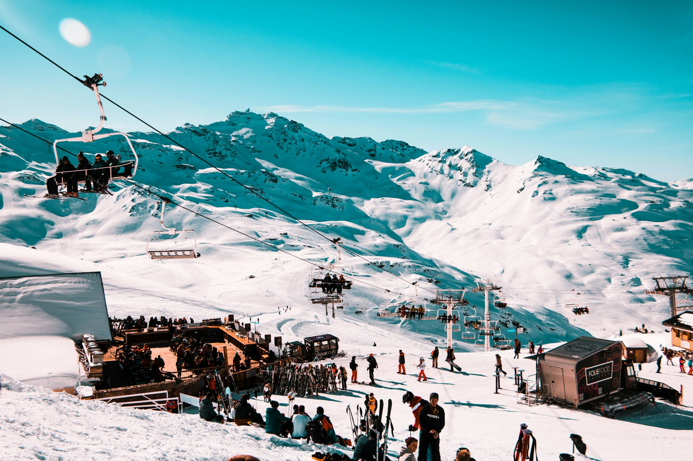

French ski resorts: 2026-2027 opening dates
Keen to ski early? Here are the opening dates announced by the big Alpine resorts for the 2026-2027 season, from earliest to latest.
Photo: Joan Oger / Unsplash
Dates are those announced by the resorts and always depend on snow: check which runs are open just before you go.
Dates for your diary
- 21 NovVal Thorens
Europe’s highest resort, until early May 2027.
- 21 NovTignes
Progressive opening thanks to the glacier, link to Val d’Isère from 28 November.
- 28 NovVal d’Isère
Ski area linked with Tignes.
- Late NovChamonix
First areas: Grands Montets and Flégère.
- 4 DecCourchevel
Season until 18 April 2027.
- 5 DecMéribel
At the centre of the 3 Valleys.
- 5 DecAlpe d’Huez
Season until 25 April 2027.
- 19 DecMegève
Full opening, after a partial early opening in early December.
Open from November
High-altitude resorts, the safest bet early in the season.

For the Christmas holidays
Resorts where the whole area is normally open over the holidays.


Tours and activities
Book online in minutes, with free cancellation on most activities and traveller reviews to help you choose.
-
Ski lessons and activities in the Alps
Instructors, off-piste outings and snowshoeing.
-
Mont Blanc trips
Aiguille du Midi and Mer de Glace from Chamonix or Geneva.
Affiliate links: if you book, Clic&Site earns a commission at no extra cost to you. Prices and availability are set by the booking platform.
Frequently asked questions
Which ski resort opens first in 2026?
Val Thorens and Tignes, both announced for 21 November 2026, depending on snow.
Can you ski in late November?
Yes, in high-altitude resorts: Val Thorens, Tignes, Val d’Isère and the first areas of Chamonix.
When do Courchevel and Méribel open?
Courchevel on 4 December and Méribel on 5 December 2026, depending on snow.